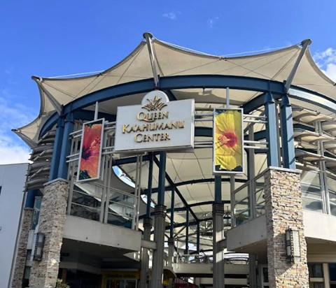
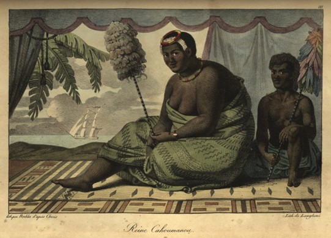

Queen Kaʻahumanu Center

Queen Kaʻahumanu Center is Maui’s central shopping hub, but its name honors a woman whose influence reshaped the Hawaiian Kingdom. Queen Kaʻahumanu (1768–1832) was one of the most powerful and consequential leaders in Hawaiian history. Her decisions shaped the Kingdom politically, socially, and most notably religiously during its most transformative era. Today, thousands walk through the mall perusing various retailers and eateries with little sense of the name that sits above its entrances or what she stood for.
Kaʻahumanu was born in a cave near Hāna and raised in the traditions of high-ranking aliʻi. She became the favorite wife of Kamehameha I and his closest political partner, advising him through the unification of the Hawaiian Islands. Her intelligence, instincts, and understanding of chiefly politics made her one of the most influential voices in his court. After Kamehameha’s death in 1819, she became Kuhina Nui, roughly comparable to a prime minister, and ruled jointly with his then twenty-two-year-old son, Kamehameha II (Liholiho).
Her early years as Kuhina Nui shaped the future of the Kingdom. Kaʻahumanu pushed decisively to end the kapu system, transforming Hawaiian religious and political life. She later embraced Christianity and supported legal reforms, literacy programs, and the establishment of schools. Her backing of Protestant missionaries and Western-style governance dramatically influenced the Kingdom’s direction. She was also strategic and coercive, using alliances and marriage to manage political rivals such as Kaumualiʻi and Kealiʻiahonui of Kauaʻi. She became one of the architects of the Kingdom.

The mall that bears her name opened in 1972, during a period when Maui’s population and economy were shifting from plantation agriculture toward tourism and retail. Naming the mall after Kaʻahumanu tied a modern commercial space to one of Maui’s most consequential historical figures.
The naming of the mall anchors a modern commercial space in a complex history, reminding Maui residents of a leader who shaped the Kingdom’s laws, faith, and future. Queen Kaʻahumanu Center keeps her name alive, even if her story is often misunderstood.